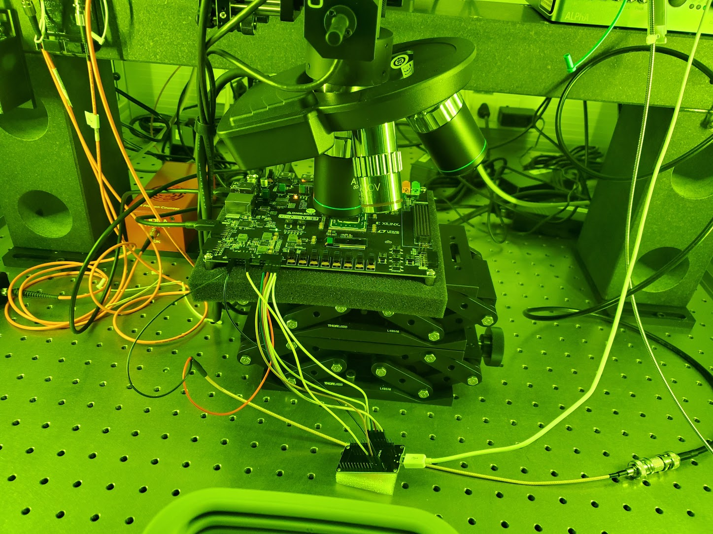
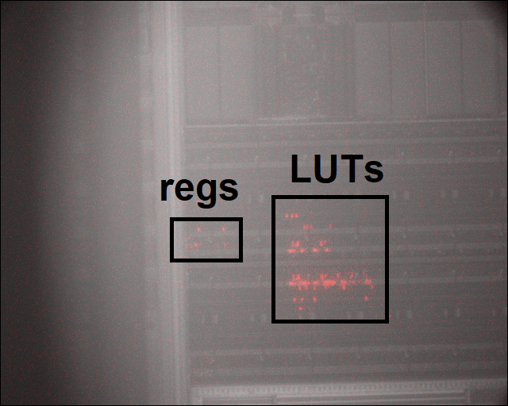
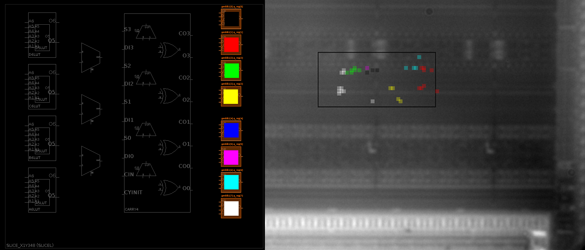

[written 2 Jul 2025]
My first foray into the realm of hardware security came from my Major Qualifying Project (MQP), where my advisor gave me a Digilent Genesys2 board with a Xilinx Kintex-7 FPGA, access to an AlphaNov Laser Microscope, and left me to figure out how to inject faults. The project was runner up for the ECE department’s provost award and an accompanying video won the ECE department’s MQP video contest.
Read the report I submitted here

Part 0 - Working around the green box
Typically for projects on these FPGA development boards, one would use the on-board switches and LEDs to control the FPGA. However, the FPGA being inside the laser microscope enclosure means I can’t touch it, and even if I could touch it, that would mess up the focus and aiming of the laser. I connected an Arduino to the PMOD headers and communicated to from a computer outside the enclosure over UART.
Initially I used whatever 3.3V Arduino boards I had lying around (such as the ESP32 dev board pictured above), then I modified an Arduino Uno to run on 3.3V by replacing the on-board 5V regulator with a 3.3V one. I would use this setup for basically all future FPGA projects at Vernam Lab, and eventually I designed the PMOD Thingy, a board based on the Arduino Leonardo specifically designed for this purpose.
Part 1 - where is the LUT I care about? (Photon Emission)
FPGAs, such as the Kintex-7, consist of hundreds of thousands of lookup tables (LUTs) for combinational logic and registers for sequential logic, so to find a fault-sensitive spot for a specific register, we need to locate it among the many others. To locate LUTs and registers, I configured them to flip rapidly, which emits a very small but detectable amount of infrared light due to the P-N junctions of the transistors, just like an LED. We can produce a “photon emission” image by placing the FPGA in a very dark box and looking at it with a very sensitive camera.

Part 2 - Brute force laser search
Using the APIs provided with the AlphaNov laser microscope, I automated a brute force search to determine which spots are sensitive to faults. The process of a) shoot laser, b) check for faults, c) reload bitstream was a lengthy process, but using the photon emission results I was able to narrow down the search area and reduce the time from days (impractical due to focus drift) to tens of minutes. Furthermore, I was able to make a map, such as the one below which shows fault-sensitive locations of eight registers

Using this map, I was able to introduce a forbidden state transition on a simple finite state machine. This was only possible because states had binary coding, the forbidden transition involved a single bit flip (or as the cool kids would say, the states had a hamming distance of 1). In addition, I helped a few other students at Vernam Lab recreate my results, and they used that knowledge to help them attack secure neural network inference. I was awarded an author credit on their paper - presented at CHES 2024 - for helping helping them out.
The YouTube video
The WPI Electrical and Computer Engineering department holds an MQP video contest, which I entered and won first place. However that video had to be around 3 minutes long, and to meet that target I made some omissions and had some pacing issues. Below is a “director’s cut” that I uploaded to my YouTube channel a while later. Apparently it got a small amount of traction, and I didn’t realize until a fellow PhD student from UMass Amherst I was collaborating with found it on r/FPGA (he thought it was me, but I don’t post on Reddit).